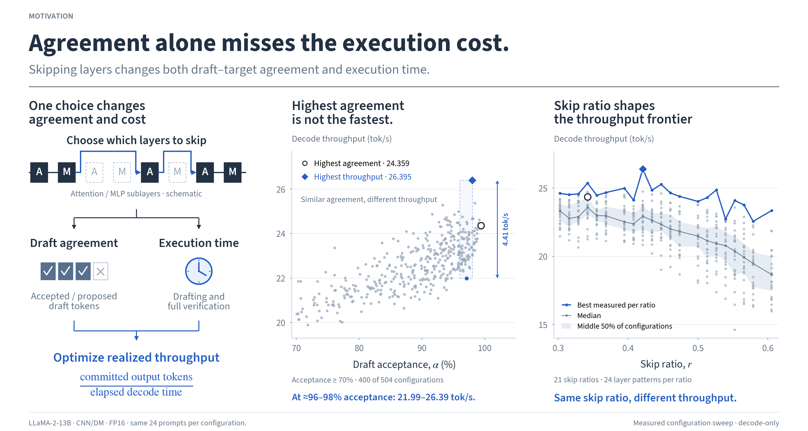
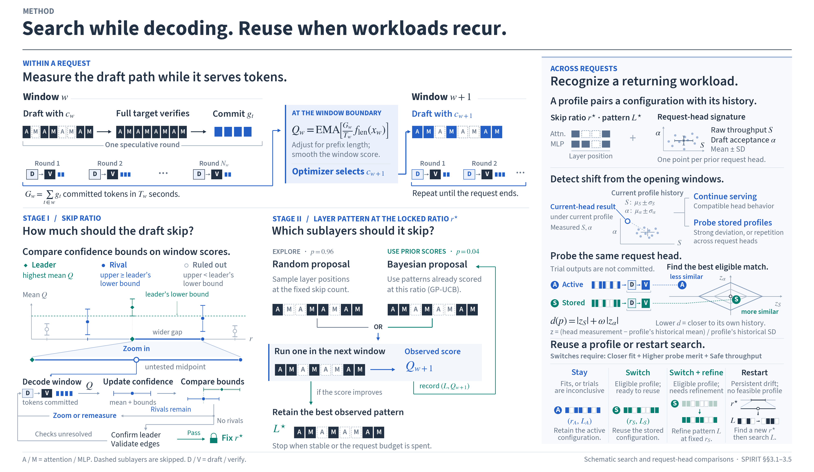
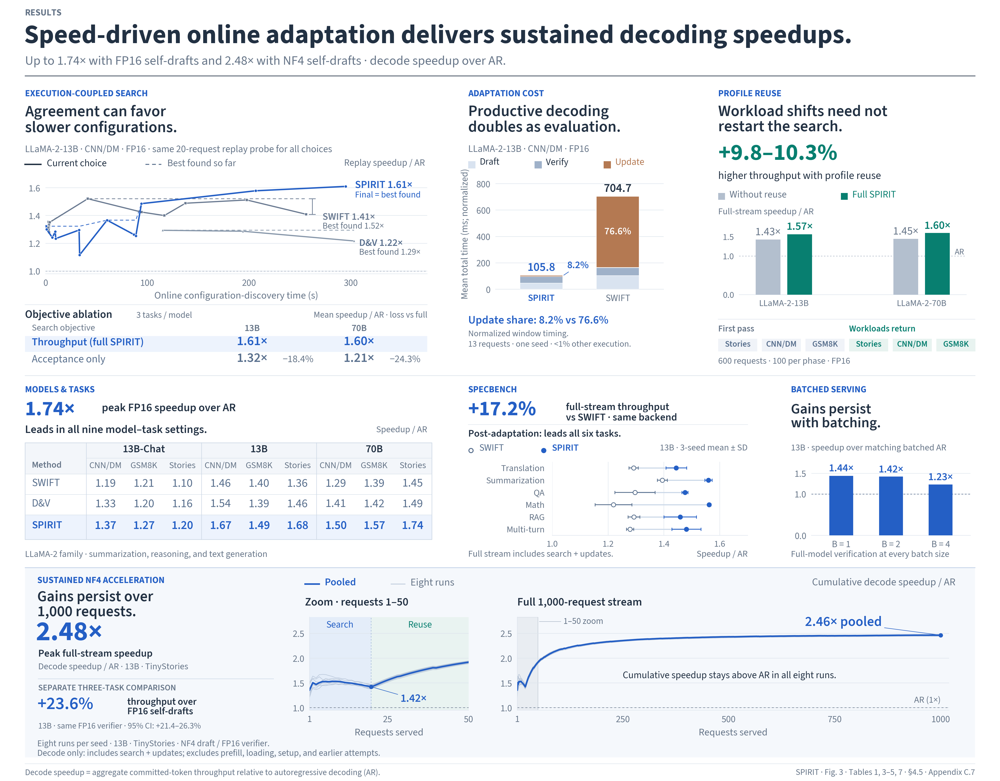

SPIRIT: Speed-Driven Online Adaptation for Self-Speculative Decoding
Training-free self-speculative decoding that adapts online to optimize window-level realized throughput rather than token agreement alone.
Up to 2.48x throughput over autoregressive decoding. NF4 self-draft · best 1,000-request run
Throughput drives adaptation.
- Self-draft
- Full verifier
- Adapt
using window-level realized throughput.
Research details
Why optimize throughput?
Agreement leaves execution cost unseen.
Draft acceptance captures only draft–target consistency. Realized throughput couples the useful token yield of drafted work—including the verifier-token bonus—with the configuration’s intrinsic execution rate. Optimizing agreement alone can therefore favor a computationally expensive draft over one that commits more tokens per second.
The measured landscape is structured: skip ratio organizes the dominant consistency–speed trade-off, while attention/MLP placement explains variation within each ratio. SPIRIT exploits this structure to reduce a combinatorial mask search to ratio-first localization and fixed-ratio refinement, evaluating within-request candidates through the same speculative execution that produces output tokens.
| Configuration | Acceptance | Tokens / s |
|---|---|---|
| Highest acceptance | 99.41% | 24.36 |
| Highest throughput | 98.02% | 26.39 |
In a highlighted ≈96–98% acceptance band, throughput spans 21.99–26.39 tokens/s.
LLaMA-2-13B · CNN/DM · FP16. 21 skip ratios × 24 layer patterns, using the same 24 prompts per configuration. Measured decode-only configuration sweep.
More detail: motivation posterLess detail: motivation poster

Online adaptation
Adapt within requests. Reuse across requests.
SPIRIT uses the target model itself to produce speculative drafts and selects layer-skipping configurations through hierarchical online search. Its controller combines window-level throughput feedback, length-aware normalization, and profile reuse to adapt to changing workloads without offline profiling or a separately trained draft model.
Within a request
Search while decoding.
Each window commits output tokens and measures its draft. A lightweight boundary update chooses the next configuration.
Token yield × execution rate
- αw
- Draft acceptance
- βw
- Extra verifier tokens per drafted token
- νw
- Drafted tokens / total decode time
Measure
Commit output while observing throughput and draft acceptance.
Calibrate
Correct for prefix length and smooth feedback into score Qw.
Search
Localize the skip ratio, then refine the layer pattern for subsequent windows.
Search details
-
Execute & observe
Draft with skipped layers; verify with the full target.
Count accepted draft tokens plus verifier-produced tokens. Measure elapsed decode time, excluding prefill. -
Calibrate feedback
Make throughput comparable as sequence length grows.
At each boundary, correct for prefix growth and smooth window noise.Qw = EMA[Sw · flen(xw)] -
Search coarse to fine
Localize the skip ratio r, then refine the layer pattern L.
Both stages are guided by the same score Qw.
Stage I · Skip ratio
Localize a promising ratio.
- Compare window-score means and confidence bounds across ratios.
- Zoom into the unresolved bracket around the leader, probing the midpoint of its wider side.
- Confirm the leader and check the edges before locking the ratio.
Stage II · Layer pattern
Refine which sublayers to skip.
- Keep the skip count fixed. Use mostly random proposals for coverage and occasional Bayesian proposals informed by prior scores.
- Run a candidate in the next productive window and record its score.
- Retain the best observed pattern when it stabilizes or the request budget is spent.
Reuse when workloads recur.
Compare raw throughput and acceptance at each request head with the active profile’s history. Supported shifts trigger probes on that same head, informing whether to stay, switch, switch and refine, or restart.
Profile reuse details
A profile pairs a skip ratio and layer pattern with a request-head signature: the mean and standard deviation of throughput and draft acceptance.
Read the request head
Compare with the active profile’s signature.
Compatible heads keep the active profile.
On mismatch, probe profiles
Compare candidates on the same request head.
Trial outputs are not committed. A switch requires a closer fit to the profile’s history, higher relative probe merit, and safe throughput.
Reuse before rebuilding
- Stay
- Keep the active profile when it fits or trials are inconclusive.
- Switch
- Reuse an eligible stored profile without further search.
- Switch + refine
- Reuse its ratio, then refine the layer pattern.
- Restart
- Restart search when drift persists and no eligible profile fits.
More detail: method posterLess detail: method poster

Evaluation
Sustained speedups across workloads.
- FP16 self-draft
- Up to1.74×
- NF4 self-draft
- Up to2.48x
Decode throughput relative to autoregressive decoding (AR), with full-target verification.
Across models and tasks
SPIRIT leads SWIFT and D&V in all nine LLaMA-2 model–task settings with FP16 self-drafts. On SpecBench, it delivers 17.2% higher full-stream throughput than SWIFT on the same backend, including online exploration and profile updates.
When workloads change
On 600-request FP16 streams with task changes every 100 requests, profile reuse adds 9.8–10.3% throughput over SPIRIT without reuse on LLaMA-2-13B and 70B. Returning tasks benefit from configurations found earlier.
Over 1,000 requests
On LLaMA-2-13B with NF4 drafts and full FP16 verification, eight 1,000-request TinyStories runs achieve 2.46× pooled speedup. Cumulative decode throughput stays above AR throughout every displayed run.
With lower-precision drafts
In a separate three-task LLaMA-2-13B comparison, NF4 self-drafts deliver 23.6% higher aggregate throughput than FP16 self-drafts (95% CI: 21.4–26.3%). Both draft precisions use the same FP16 verifier and are optimized separately.
Sustained results use one historical best run per seed from 27 completed candidates. Decode timing includes online search and profile updates; it excludes prefill, model loading, setup, and earlier attempts.
Additional evaluations cover Qwen and Mixtral architectures, batched serving, and HumanEval code generation. Full protocols and comparisons are available in the research materials.
More detail: results posterLess detail: results poster
